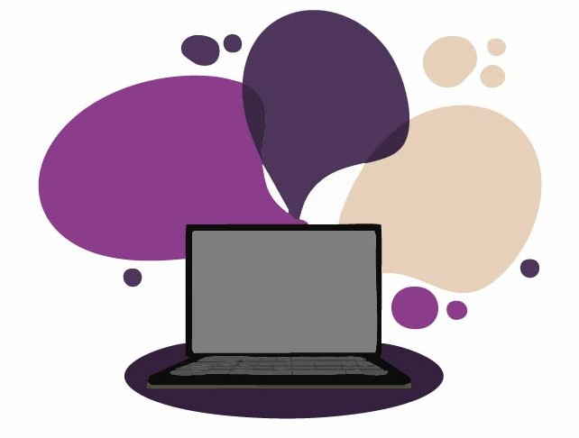

mots : 474
Comprenez pourquoi j'ai choisi de m’orienter vers une formation DEUST WMI à distance pour ses études.
Qu'est-ce qu'un DEUST WMI ?

Ce diplôme permet aux étudiants d’apprendre à développer des compétences en informatique pour gérer des sites web. Cette formation a la particularité d’être totalement en distanciel. Elle se compose d’une plateforme en ligne sur laquelle les étudiants peuvent retrouver tous les cours et de nombreuses ressources. Le DEUST WMI s’obtient en deux ans et permet une insertion professionnelle dès le diplôme validé grâce aux différents stages et aux contenus des cours axés sur la pratique et les compétences techniques.
Le DEUST WMI est une formation complète dans l’objectif de gérer à la perfection des sites web dès la délivrance du diplôme. Pour cela, les étudiants sont amenés à développer des compétences techniques en développement web, animation de site et création de contenu, gestion de site internet… L’étudiant doit également s’intéresser à la sécurité et aux droits de l’Internet, il doit apprendre à effectuer des recherches pertinentes et communiquer de manière claire pour se faire comprendre au mieux et garder l’attention des clients qui visitent son site. Cette formation est donc très complète, ce qui permet d’acquérir diverses compétences pour maîtriser au mieux les sites web.
Mes motivations et objectifs professionnels

J’ai rapidement compris que le numérique avait une place grandissante dans le monde et j’ai développé de l’intérêt à comprendre le fonctionnement et savoir l’utiliser. C’est lors des cours d’NSI (numérique et sciences informatiques) durant les deux dernières années du lycée que je me suis vraiment intéressé à l’informatique et plus particulièrement à la création de sites web. Après cela, j’ai choisi de me consacrer à des études d’informatique, et plus particulièrement des études sur les sites web : le DEUST WMI à Limoges.
J’ai opté pour cette formation pour différentes raisons : tout d’abord, il s’agit d’une formation qui m’intéresse puisque je souhaite développer mes compétences pour gérer des sites web… De plus, il s’agit d’une formation à distance, ce qui me permet d’organiser mon temps plus librement. Ainsi, je peux décider de passer plus rapidement sur les compétences que j’ai déjà acquises, et consacrer plus de temps sur des domaines dans lesquels je pourrais rencontrer des difficultés ou pour lesquels j’éprouve de l’intérêt et je souhaite approfondir mes connaissances. Au long terme, j’hésite entre les métiers de développeur web et UX designer (qui sont très recherchés par les entreprises), mais je sais que le temps et les différentes compétences acquises me permettront de définir au mieux mon projet professionnel. Cette formation correspond donc parfaitement à mon projet et me permet, dans tous les cas, de me rapprocher d’un métier qui me correspond.
Le DEUST WMI apporte des connaissances variées qui sont alignées avec mes projets professionnels et faire cette formation me permettra d’y arriver pleinement et facilement.